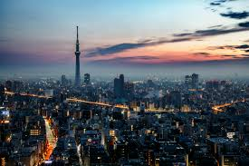
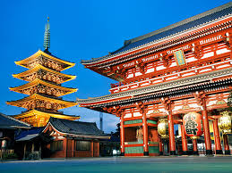

Your complete guide to visiting one of the world's most exciting cities.
Tokyo city skyline at night with Tokyo Tower lit up in orange

Tokyo is the capital of Japan and one of the most visited cities in the world. It blends ancient temples and shrines with towering skyscrapers and cutting-edge technology. Whether you love history, food, fashion, or nature, Tokyo has something for everyone.
| Detial | Information |
|---|---|
| Country | Japan |
| Language | Japanese |
| Currency | Japanese Yen (¥) |
| Best Time to Visit | March to May (spring) or October to November (autumn) |
| Time Zone | JST (UTC+9) |
Tokyo has hundreds of things to see and do. Here are the must-see highlights:
gate with lantern and crowds of tourists

For more information, visit the official tourism website: Go Tokyo
Tokyo has more Michelin-starred restaurants than any other city in the world. Here are some foods you must try:
See our Recommended Restaurants page for a full list.
Tokyo is served by two major international airports:
| Airport | Code | Distance from City Centre | Travel Time by Train |
|---|---|---|---|
| Narita International Airport | NRT | 60km | ~60 minutes |
| Haneda Airport | HND | 14km | ~25 minutes |
Once in the city, the Tokyo Metro and JR train lines will take you almost anywhere. Consider purchasing a Suica card for easy tap-and-go travel on all trains and buses.
Tell us about your trip and we will send you a personalised travel itinerary!